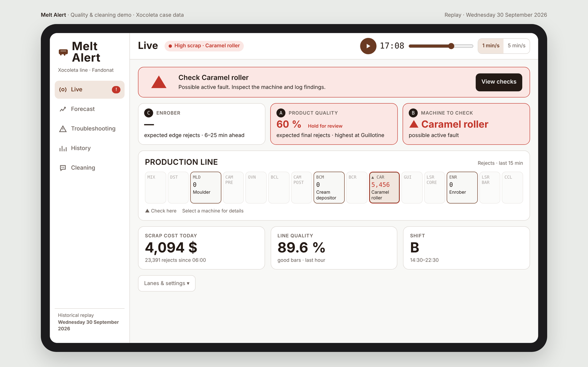

AI Mavericks · Reto 2 Smart Factory · Línea Xocoleta
Melt Alert
La línea Xocoleta pierde dinero cada minuto. Melt Alert lo convierte en dinero recuperado.
Desde que hemos empezado a hablar, la línea ha perdido0,00 USD
13 semanas de datos reales · 65 días de producción
La línea pierde 1,8 millones de dólares cada trimestre
Limpieza de las 14:00margen no generado
0 $
Paros no programadosmargen no generado
0 $
Scrapcoste de material
0 $
0 $
por trimestre≈ 7,2 M $ al año
Fuente: fct_oee_minute, fct_scrap_minute y HTML del caso («Where the money goes»). Margen: 25.000 USD/h, supuesto del caso.
Parte 1 · Scrap
El scrap no está repartido: sale casi todo por el mismo sitio
86,8 %
del coste son barras terminadas rechazadas al final296.002 $ en 13 semanas, ya con chocolate
96 %
de esas barras fallan en alturaalgunas fallan además en largo o ancho
>80 %
de los fallos de altura salen de los 6 carriles de los bordescarriles 1–3 y 30–32; el 31, casi un 30 %
Causa candidata · Enrobadora, estación 13 · a confirmar en planta
La candidata: la cortina de chocolate deja los bordes cortos
Turno A, 8 horas
−1,4 mm
de chocolate en los bordes frente al centro. Encaja con que el láser final las rechace por bajas.
Limpieza de las 14:00
Es lo único que hoy reequilibra la cortina. Después la diferencia vuelve a crecer y nadie limpia por la noche.
Grosor = altura láser de barra − altura láser de núcleo (2 min antes). Media por media hora, 6 jul – 2 oct 2026.
Parte 2 · Paro programado
Un paro que nadie apunta: 30 minutos cada día
06:0010:0014:0018:3022:30
Al día
0
barras que no se fabrican (1.920 por minuto)
Al día
0 $
de margen que no se genera
Al trimestre
0 $
≈ 3,25 M $ al año
OEE reportado
94,3 %
OEE real con la limpieza
91,4 %
«14:00, half an hour, every weekday. We don't write it down as a breakdown.»Operadores de la línea, en el caso
La solución
Melt Alert: una app para el operario, dos soluciones
Parte 1 · Scrap
Detectar el scrap antes del final de la línea
Tres modelos de IA: uno previene el defecto de la enrobadora, otro estima el riesgo de cada lote y otro dice qué máquina revisar.
Parte 2 · Limpieza
Bajar la limpieza de 30 a 16 minutos, con objetivo de 15
Planificador SMED: preparar antes, limpiar en paralelo y hacer el relevo con la línea en marcha. Sin quitar ningún paso de higiene.
Ética · uso responsable
La IA ayuda al operario, no lo sustituye
Nadie pierde su puesto
Los minutos recuperados son más producción, no menos plantilla. Las mismas personas, con mejor información.
Siempre decide una persona
La app recomienda y explica por qué; nunca acciona máquinas. Retener, revisar o arrancar lo confirma el operario.
Datos de máquinas, no de personas
No mide ni puntúa a nadie. La IA funciona en local: los datos no salen de la fábrica. Sin sensores nuevos.
Impacto positivo
Menos urgencias y trabajo más seguro. Hasta ≈ 2,7 M barras al año menos a la basura. Formación incluida y relevo pactado con los trabajadores.
Parte 1 · Tres modelos en cadena
Prevenir, avisar y señalar dónde mirar
C1º · Prevención
¿Se van a salir los bordes del límite?
97,7 %
de los minutos con rechazo alto en los bordes, avisados con 6–25 min de margen para reajustar la cortina.
A2º · Riesgo
¿Este lote acabará en scrap?
7 min
de antelación (mediana). Decide: continuar, revisar o retener. 276 señales de la línea.
B3º · Diagnóstico
¿Qué máquina reviso primero?
86,4 %
de acierto al señalar la máquina; cubre el 60,6 % de los minutos con incidencia.
Una sola recomendación en pantalla: «Check Caramel roller». La confirma el operario.
Melt Alert, en directo
Réplica minuto a minuto del 30 sep 2026 · datos reales

Parte 2 · Pestaña Cleaning
La limpieza, de 30 a 16 minutos· objetivo: 15
Fin de la limpieza
14:30
Arranque de la línea
14:30
Producción recuperada al día
0 min
1Preparar los kits antes del paro
2Tres equipos limpiando en paralelo
3Relevo del turno B con la línea en marcha
Los 65 paros de 30 min son datos del caso. Las 12 tareas, sus tiempos y los equipos son un escenario simulado.
El resultado
De perder dinero a recuperarlo
Pérdidas / año
Recuperado / año
Modelos A + Bpotencial · estimado en testsi se recupera el 100 % de los lotes retenidos a tiempo
hasta 0 $
Modelo Cpotencialsi el rechazo de los bordes baja a la mitad
hasta 0 $
Limpieza de 14 minutos menosmargen potencialsi las 26.880 barras más al día se producen y se venden
hasta 0 $
hasta 2 M $
al año por línea
Todo es potencial: A + B, estimado con el replay de 10 días de test; C y limpieza, a confirmar con un piloto. Sin doble conteo.
Visión de futuro · escalar el proyecto
Si llevamos Melt Alert a más líneas, ganaríamos mucho más
Calculado con el ahorro de la limpieza de las 14:00potencial condicionado
1,5 M $
Hoy línea Xocoleta
7,6 M $
Escalando a 5 líneas
15,2 M $
Escalando a 10 líneas
30,3 M $
Escalando a 20 líneas
14 min recuperados al día por línea. Potencial condicionado: supone producir y vender todo lo recuperado. No son líneas actuales.
Hoja de ruta · Inversión · ROI
Invertir 175.000 $ para recuperar hasta 2 M $ al año
Semanas 1–4
1 · Medir
Registrar cada tarea (QR por estación) y cada alerta. Tiempos reales en vez de simulados.
Semanas 5–8
2 · SMED
Kits antes del paro y tres equipos en paralelo. Calidad valida cada cambio.
Semanas 9–12
3 · Relevo y cortina
Turno B listo a las 14:15; reajuste de la cortina disparado por el modelo C.
Trimestre 2+
4 · Escalar
Por oleadas, empezando por las líneas con más margen por hora.
Inversión · línea Xocoleta
Integración de datos y despliegue en planta
60.000 $
Equipo del piloto, 12 semanas
90.000 $
Hardware: tablets, QR y servidor local de IA
15.000 $
Formación de operarios
10.000 $
Inversión inicial
175.000 $
Cada año: soporte y reentreno (40.000 $) + relevo 15 min antes (39.000 $)
≈ 80.000 $/año
Retorno · primer año
Potencial · todo se cumple
≈ 7×
ROI · 1,8 M $ netos
≈ 1 mes
de payback
Conservador · sin modelo C
≈ 2,3×
ROI · 0,58 M $ netos
≈ 3 meses
de payback
Costes: estimación nuestra. Potencial: A + B 79.000 $ + C 450.000 $ + limpieza 1,52 M $. Conservador: sin modelo C y solo se vende la mitad de la producción recuperada. ROI = beneficio neto del año 1 / (inversión + coste anual). Payback desde el fin del piloto. Cada fase empieza solo si calidad valida la higiene.
Melt Alert · AI Mavericks
De 7,2 M $ perdidos al año, recuperamos hasta 2 M $
De pérdidas que nadie ve a dinero recuperado cada día
Mientras os lo contábamos, la línea ha perdido0,00 USD